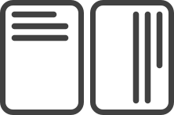

縦覧帳
日本語のためのMarkdownエディタ
横のものを縦にする。縦のものを横にする。ルビを打つ。強調する。長文を書く。短文を書く。
豊富な機能はいらない、ただ書けるだけでいい。でも、書きにくいのは、いや。
そういう、縦に書いて見るエディタがあったっていいじゃないか。
縦覧帳なら全部あります。
Why 縦覧帳？
縦覧帳では文章入力に集中できるように、機能を最低限にしぼっています。
（機能を増やしたデスクトップ版は後日リリース予定です）。
（機能を増やしたデスクトップ版は後日リリース予定です）。
日本語マークダウン
日本語の複雑な表記ルールをWeb上で再現するには大変です。縦覧帳ではいくつかの記法をおぼえれば、誰でも簡単に表現できます。

縦横切替
いちいちメニューを開く必要はありません。プレビューをクリックするだけで切り替えられます。
縦書き印刷・PDF出力
面倒な禁則処理の設定をする必要はありません。ワンクリックで完了です。

プレビューとエディタの分類
PCの変換機能は縦書きのためには作られていません。変換中に文字が隠れてしまってわずらわしい。そこでエディタとプレビューは分離しました。
使い方
- 左側のエディタに文字を入力します。
- 右側のプレビューで確認します。プレビューをクリックすると縦横が切り替わります。
- 右下のダウンロードボタンをクリックすると印刷画面が開きます。PDFにする場合は「PDFに出力する」を選択しましょう（設定画面はブラウザや環境によります）
これだけです！
チートシート（順次追加予定)
| 名称 | 記法 | 例 | プレビュー例 | 注記 |
|---|---|---|---|---|
| ルビ | ｜ルビを振る文字《ルビ》 | ｜漢字《かんじ》にルビを振ります | 漢字にルビを振ります | 青空文庫記法ではルビを振る文字の前に縦棒（｜）を書かなくてもルビを振ることができますが、縦覧帳では対応しません。 |
| 圏点 | ［＃「圏点をつける文字」に傍点］ | 強調［＃「強調」に傍点］します | 強調します | 青空記法以外のマークダウン方式にも対応する予定です |
| 太字 | ［＃「太字にする文字」は太字］ | 太らせたかった［＃「太らせたかった」は太字］んです | 太らせたかったんです | 青空記法以外のマークダウン方式にも対応する予定です |
| 大見出し 中見出し 小見出し |
［＃「大見出しの文字」は大見出し］ ［＃「中見出しの文字」は中見出し］ ［＃「小見出しの文字」は小見出し］ |
見出し［＃「見出し」は大見出し］でも 文字を大きく［＃「大きく」は中見出し］したい時でも 使えます［＃「使えます」は小見出し］。 |
見出しでも 文字を大きくしたいときでも 使えます。 |